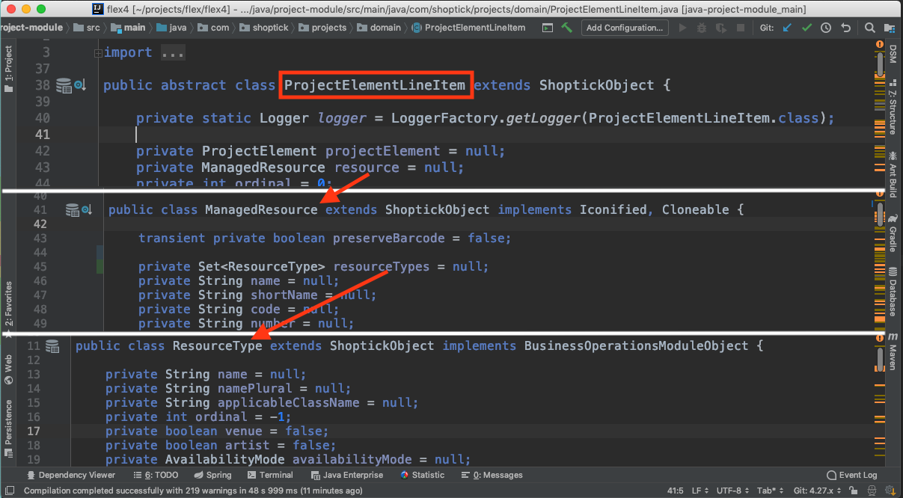
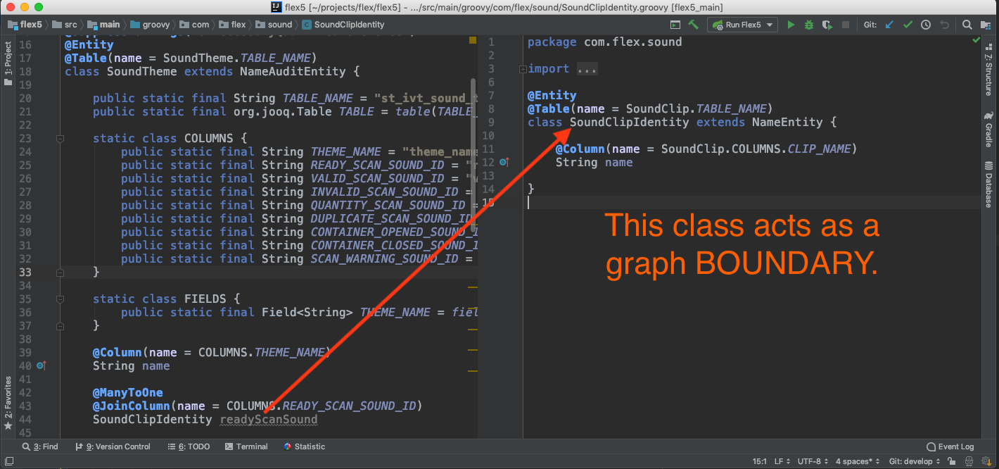

We need more talks about solving problems we face in our day jobs.
This will be an opinionated talk.
Because of "scar tissue" I have.
Some of these opinions might not apply to your work.
Where does the story begin?
Let's talk about Flex4 a bit.
It's a legacy Java single tenant app.
uses Spring/Hibernate/Jetty/MySQL
started in 2003'ish
It was built super rapidly.
Speed was never much of a consideration
little thought about structural stuff
Large methods & classes (13,000+ line class!)
Flex4 has a LOT of issues.
We will focus on it's speed problem.
I mentioned it's built with HIBERNATE.
Hibernate really isn't the core issue.
**It's what YOU ask it to DO.**
Unawareness of it's MO is the killer.
Blaming Hibernate is like blaming this poor delivery person.
So, what's the real issue?
**It's your webby object graph.**
For those unfamiliar what I mean by an object graph....

What did an object graph like this lead to?
Absolutely out of control SQL!
SQL Madness Video
What are the main object graph pain points?
N+1 selects (lazy loaded collections**)
Impossible Hibernate Collection bugz
Database IO counts through the roof
Database timeout/locks from high load
Massive memory spikes (stack objects)
How did we try to tame Hibernate down?
Hibernate 2nd level cache
Hibernate Collection Batching
We bypassed Hibernate by hand coding SQL
We built Ad Hoc Caches in hotspot areas
We tried to trim down object graph
Collection batching might be the best tip you take home.
See [https://docs.jboss.org/hibernate/...](https://docs.jboss.org/hibernate/orm/5.3/userguide/html_single/Hibernate_User_Guide.html#fetching-batch).
What was the solution?
After much hand wringing...
**We decided the Flex4 backend was categorically unscalable.**
A new backend was needed.
We started a new Spring Boot/Data/Security backend...
**on top of the existing database.**
How did we architect the data layer?
We knew the object graph needed some kinda boundary.
We started by mapping to lightweight "identity" classes.

Eventually scrapped that and went with a straight up "row to object" model.
```groovy
@Entity
@Table(name = BusinessLocation.TABLE_NAME)
class BusinessLocation extends ManagedResource implements BusinessModel {
public static final String TABLE_NAME = "st_biz_location"
@Column(name = COLUMNS.LOCAL_CURRENCY_ID)
String localCurrencyId //Previously was @ManyToOne
@Column(name = COLUMNS.ENTITY_ID)
String owningCorporateEntityId //Previously was @ManyToOne
@Column(name = COLUMNS.TIME_ZONE)
String timeZone
}
```
What data layer tools did we end up using?
Let's first look at tools we didn't pick...
Spring JdbcTemplate
```groovy
List<Permission> findPermissionsForUser(String userId){
return jdbcTemplate.query(
'''SELECT permission AS name, denied AS denied
FROM rh_user_permissions
WHERE userprofileid = ?''',
new RowMapper<Permission>() {
@Override
Permission mapRow(ResultSet rs, int rowNum) throws SQLException {
return new Permission(rs.getString('name'), rs.getBoolean("denied"))
}
}, userId)
}
```
sql2o
```java
public List<Customer> fetchCustomers(customerId) {
try (Connection con = sql2o.open()) {
final String query =
"SELECT id, name, address " +
"FROM customers WHERE id = :customerId";
return con.createQuery(query)
.addParameter("customerId", customerId)
.executeAndFetch(Customer.class);
}
}
```
JDBI
```java
@SqlUpdate("INSERT INTO user(id, name) VALUES (:id, :name)")
void insertNamed(@Bind("id") int id, @Bind("name") String name);
@SqlUpdate("INSERT INTO user(id, name) VALUES (:id, :name)")
void insertBean(@BindBean User user);
@SqlQuery("SELECT * FROM user ORDER BY name")
@RegisterBeanMapper(User.class)
List<User> listUsers();
```
So what makes a great data layer tool?
The absolute minimal boilerplate possible IMO.
**It should be fun!**
What tools did we pick?
Spring Data JPA
```groovy
@Query("SELECT o FROM SalesTaxRuleIdentity AS o ORDER BY o.name ASC")
List<SalesTaxRuleIdentity> findAllIdentities()
@Query('''SELECT icon FROM IconNode icon
WHERE icon.name LIKE CONCAT('%',?1,'%') ORDER BY icon.name ASC''')
Page<IconNode> searchIconNodes(String searchText, Pageable pageable)
@Query('''
SELECT CASE WHEN (count(p.documentNumber) > 0)
THEN TRUE ELSE FALSE END AS document_number_exists
FROM ProjectElement p WHERE p.documentNumber = ?1
''')
boolean documentNumberExists(String documentNumber)
```
**YES, it's been a huge success for Flex5 speed.**
Things we still think about...
We still have to watch out for database round trips.
We fetch ID sets to avoid N+1's.
We use recursive MySQL stored procedures to find parent/child id sets.
We use a SPARSE select when pulling big classes.
```groovy
@Query('''
SELECT
eqDef.id as id,
eqDef.prepManifestTypeId as prepManifestTypeId,
eqDef.prepAutoScanMode as prepAutoScanMode,
eqDef.prepAutoScanMatchMode as prepAutoScanMatchMode,
eqDef.autoPopulateNumberEnabled as autoPopulateNumberEnabled,
eqDef.numberingSchemeId as numberingSchemeId,
eqDef.numbered as numbered
FROM EquipmentListDefinition AS eqDef
WHERE eqDef.id = ?1
''')
Map findSparseByIdForPrepProcess(String definitionId)
```
By the way...
Caching is a smell if it's your first instinct.
And finally, how does our data layer translate to JSON?
**The beauty of this approach is that we have no domain/DTO translation layer.**
The data comes out lean from the database...
and our entities serialize directly across the wire.
What questions do you have?
Links
- P6Spy: [github.com/p6spy/p6spy](https://github.com/p6spy/p6spy)
- Hibernate Collection Batching: [docs.jboss.org/hibernate..](https://docs.jboss.org/hibernate/orm/5.3/userguide/html_single/Hibernate_User_Guide.html#fetching-batch).
- Stranger Rewrite Pattern: [martinfowler.com/bliki/Strangler...](https://www.martinfowler.com/bliki/StranglerApplication.html)
- JDBCTemplate Tutorial: [baeldung.com/spring-jdbc-jdbctemplate](https://www.baeldung.com/spring-jdbc-jdbctemplate)
- sql2o: [sql2o.org](https://www.sql2o.org/)
- JDBI: [jdbi.org](http://jdbi.org/)
- Spring Data Tutorial: [baeldung.com/the-persistence-layer...](https://www.baeldung.com/the-persistence-layer-with-spring-data-jpa)
- JOOQ: [jooq.org](https://jooq.org)
Thanks for listening!THE END.